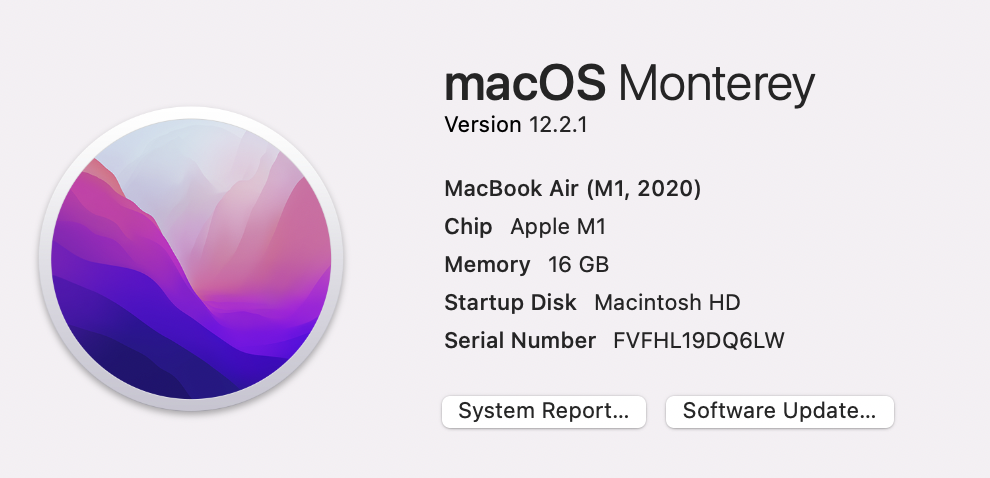
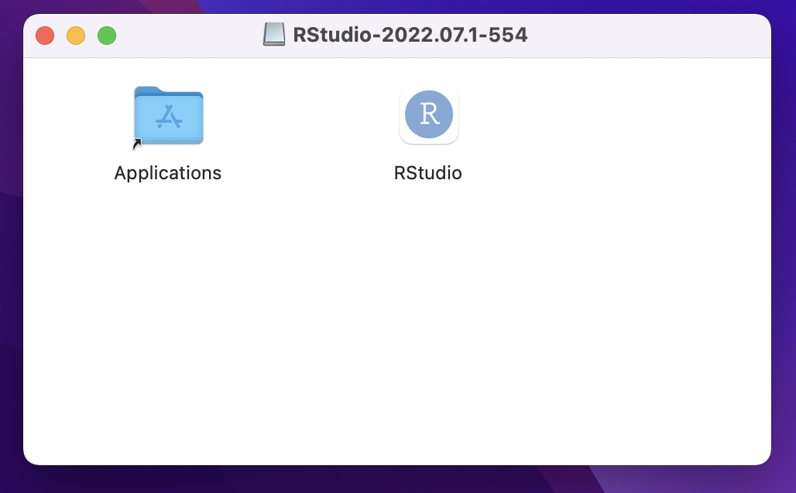
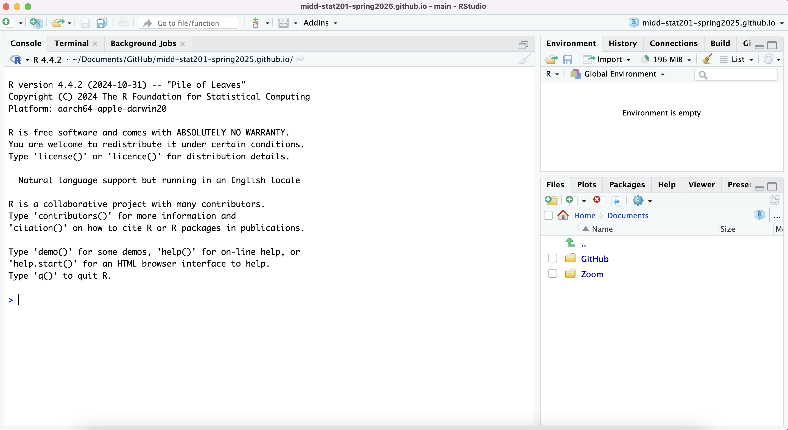

Installation instructions
Please install R and RStudio (in this order). Instructions are provided below depending on if you have a Mac/Windows or Linux. Be sure to verify that your installation was successful (see last part of this page). Please come by office hours if you have trouble or would like guidance during the installation process!
Mac/Windows
Installing R
- Go to the CRAN website and click on the appropriate link under “Download and Install R”. Then:
- Windows: click on the blue text that says “Install R for the first time”.
- macOS: check your Mac OS system and if you have a chip (Apple icon -> About this Mac -> Overview)
Then on the website, click the newest release that supports your current OS version. This will most likely be R-4.4.1-arm64.pkg or R-4.4.1-x86_64.pkg.

- A file will download, most likely to your Downloads folder. Run the file by clicking on it. Allow the app to make changes to your device if prompted.
- Follow the installation instructions, until you click on “Finish” to exit the installation setup. At this point,
Rshould be successfully installed!
Installing RStudio
- Go to this Posit website and scroll down a little until you see two steps. We already did Step 1!
- Under Step 2, click the blue Download RStudio Desktop button recommended for your computer
- macOS users: double check you have an OS that is recent enough! If not, find an older version of RStudio suitable for you OS.
- Run the downloaded RStudio Executable file until you hit the “Finish” button. It may be the case that you don’t have to click anything at all.
- After RStudio finishes downloading, a window like this might pop up. If so, go ahead and drag the RStudio icon into the Applications folder.

Linux
Installing R
- Follow the instructions on for Steps 1 and 2 on this website.
Installing RStudio
- Go to step 3 of the same website
Verify
Open up RStudio by (double) clicking on the icon found in your Applications folder or searching for it in your search bar. The icon looks like this:
Once you open up RStudio, you should have an interface that looks like the following (don’t worry if there are slight discrepancies). If so, your installation was a success! If not, swing by installation help hours.
